SHAYBONIYXON KO‘PRIGI
XVI asr muhandislik durdonasi. Bir vaqtning o‘zida ko‘prik ham, suv taqsimlagich ham bo‘lgan yagona inshoot.
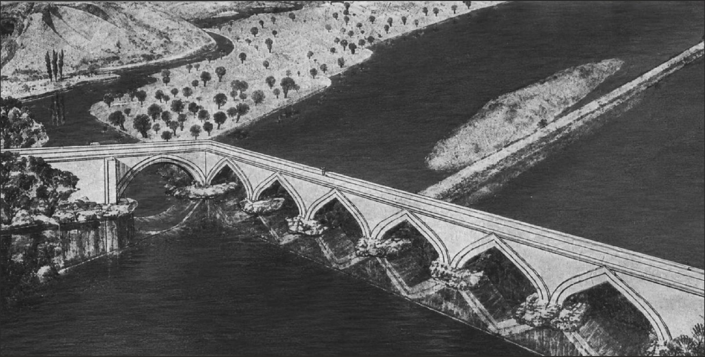
Yetti ravoqli, uzunligi 200 metrdan ortiq g‘isht ko‘prik. Zarafshon ustidan o‘tgan va shu bilan birga daryo suvini ikkiga bo‘lib bergan.
Bir inshoot, to‘rt nom. Xalq xotirasida u turli davrlar va turli hukmdorlar nomi bilan bog‘langan — shuning uchun uni ko‘pincha Amir Temur qurdirgan deb o‘ylashadi.
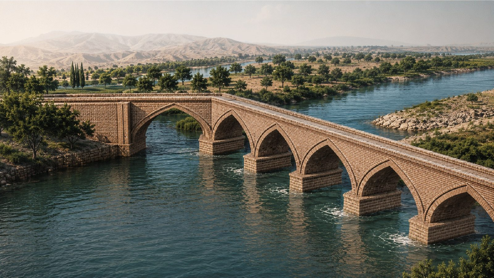
Samarqand shahri markazidan 7–8 km shimoli-sharqda, Zarafshon daryosining so‘l qirg‘og‘ida. Ko‘prik o‘qi daryo o‘zaniga 102° burchak ostida qo‘yilgan — bu suv oqimini hisobga olgan yechim.
Butun ish bir oy ichida bajarilgan. Bunday tezlikning sababi oddiy — qurilishda butun qo‘shin ishlagan, ya’ni yo‘l qurilishi davlat ishi sifatida qaralgan.
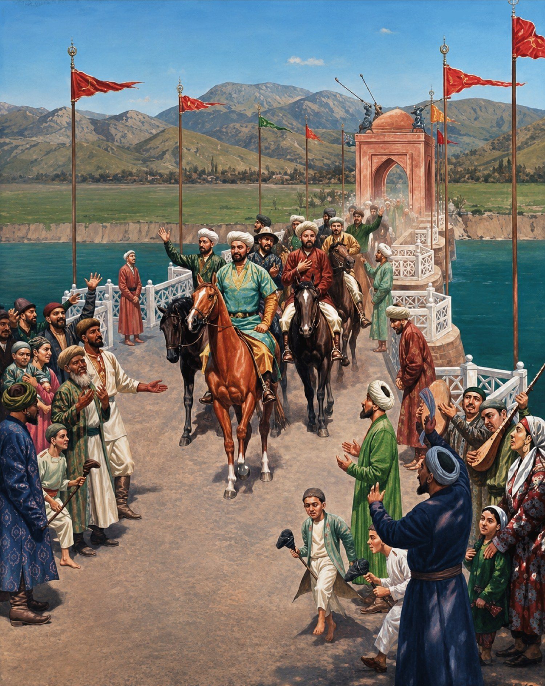
Qurilish bir oy ichida tugallandi. Xon qo‘shini bilan Buxorodan qaytayotib eski kechuvni vayron holda topgan, shu joyda yangi ko‘prik qurishni buyurgan edi.
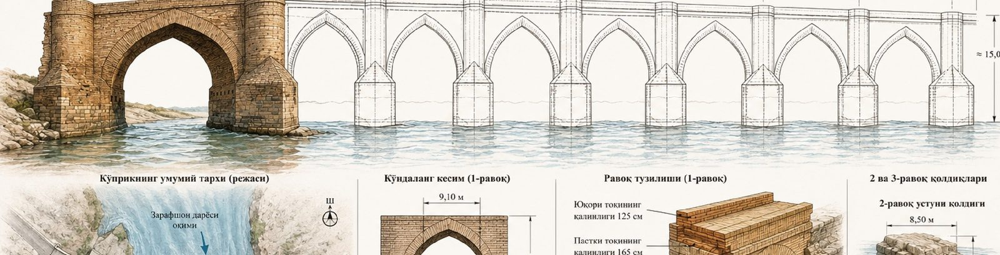
Yetti ravoq, har biri taxminan 28,0 metr. Umumiy uzunligi 200 metrdan ortiq, balandligi taxminan 15,0 metr.
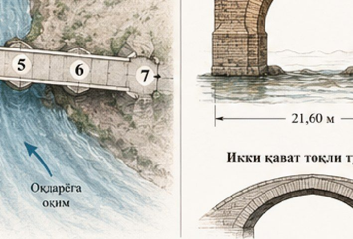
Ravoq oralig‘i 21,60 m, balandligi 11,85 m, ko‘prik yo‘lagining kengligi 9,10 m. Tok ikki qavatli qilib terilgan — bu yuk taqsimlanishini yaxshilaydi.
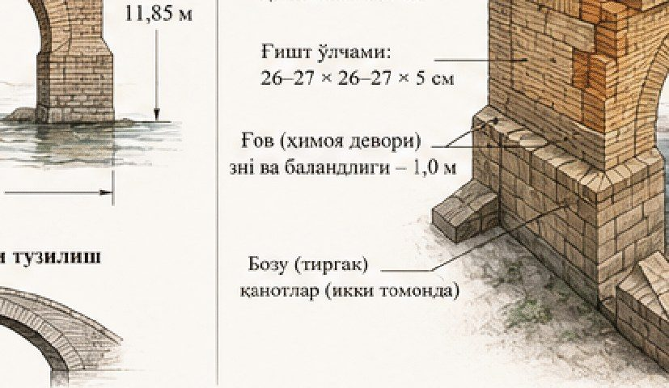
Yuqori toqining qalinligi 125 sm, pastki toqining qalinligi 165 sm. G‘isht o‘lchami 26–27 × 26–27 × 5 sm. Ikki tomonda bozu — tirgak qanotlar; g‘ov — himoya devorining eni va balandligi 1,0 metr.
Har bir balandlikda o‘z qorishmasi. Suv ostida ohak, o‘rtada ganch, yuqorida quruq sharoitga mos qorishma — ya’ni material namlik darajasiga qarab tanlangan.
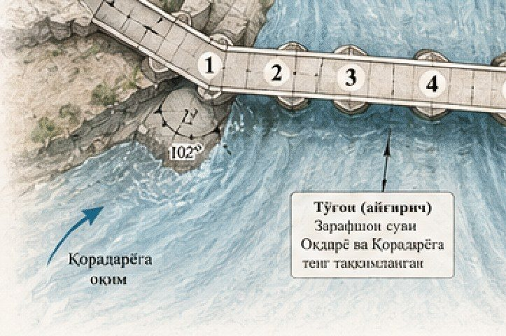
Ko‘prik ostidagi to‘g‘on Zarafshon suvini Oqdaryo va Qoradaryoga teng taqsimlab bergan. Ya’ni bu faqat o‘tish joyi emas, balki gidrotexnika inshooti edi.
Bitta inshoot uchta vazifani bajargan: yo‘l, suv taqsimlash va sug‘orish.
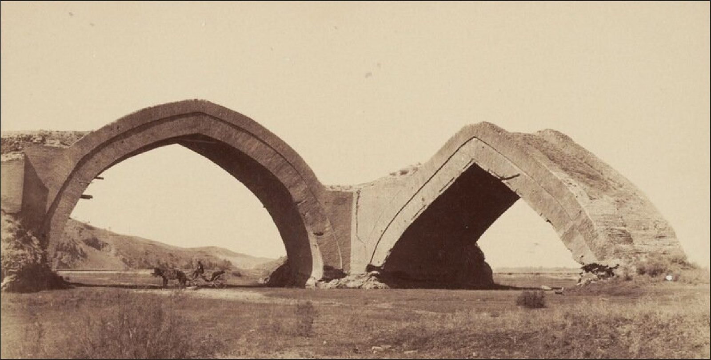
Bu suratda ko‘prikdan ikki ravoq turgani ko‘rinadi. Chapdagi ravoq butun, o‘ngdagi yarim vayron holatda. Ravoq ostidan hali ham arava o‘tgan.
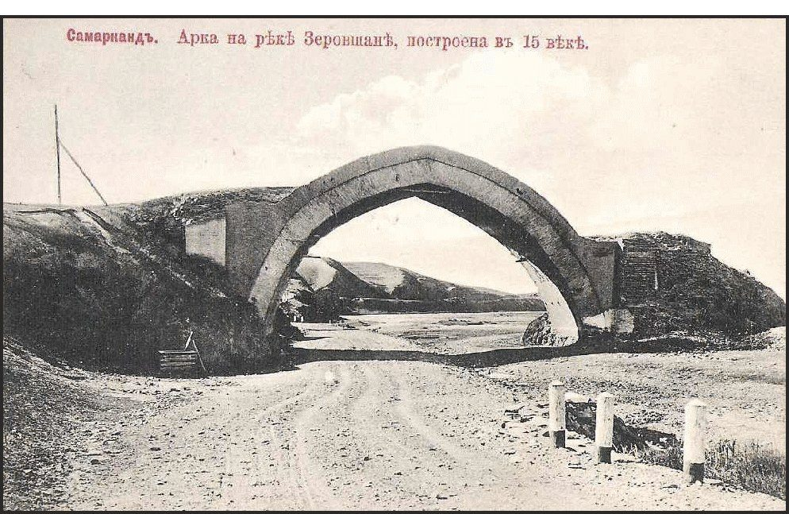
Eski rus otkritkasida ko‘prik XV asrga oid deb yozilgan. Aslida u 1502-yilda, ya’ni XVI asr boshida qurilgan. Xato atribusiya shu davrdan boshlangan.
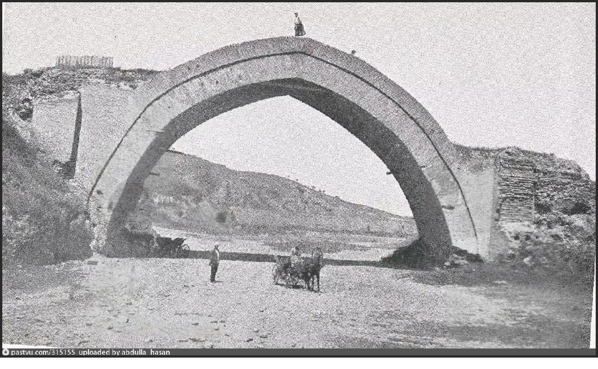
Keyingi suratlarda faqat bitta ravoq turadi. Odam va arava bilan solishtirilganda ravoqning haqiqiy o‘lchami yaqqol ko‘rinadi — balandligi qariyb 12 metr.
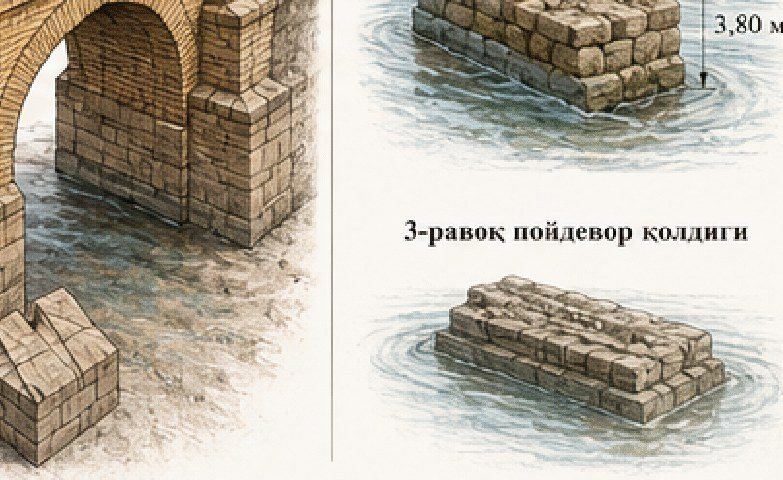
2-ravoq ustunining qoldig‘i — 8,50 × 3,80 metr. 3-ravoqning poydevori ham qisman saqlangan. Qolgan ravoqlar suv va zilzila tufayli yo‘qolgan.
To‘rt yuz yil davomida inshoot asta-sekin yo‘qoldi. Uni buzgan asosiy kuchlar — suv va zilzila.
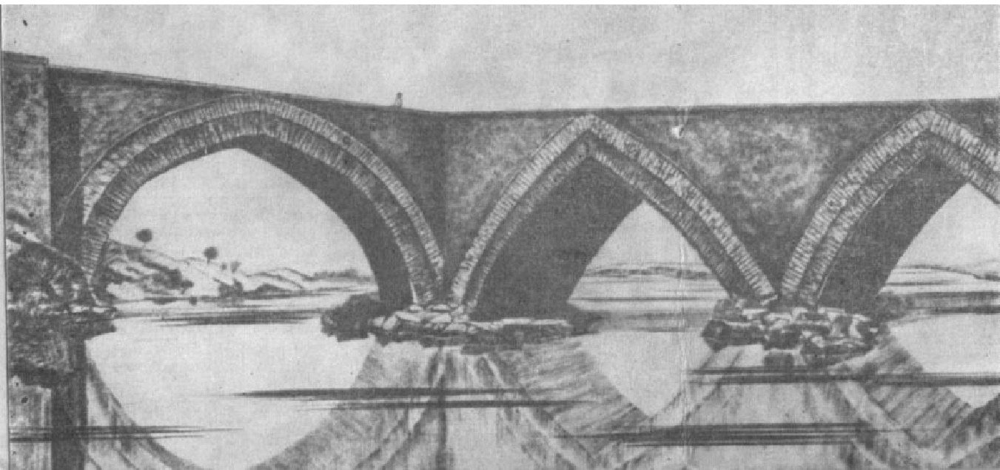
Bugun Zarafshon ustidan o‘tgan har bir ko‘prik — 1502-yilda qabul qilingan qarorning davomi. Yakka qolgan ravoq esa O‘zbekiston gidrotexnika tarixining betakror yodgorligi.